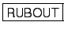
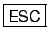
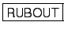
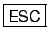

If you make a typing error while in text mode, you can use the
 or

or backspace
keys to rub out characters you have typed in.
Vi
shows the cursor moving back over the erroneous characters
it is removing but it does not update the terminal display
until you press
.
or

or backspace
keys to rub out characters you have typed in.
Vi
shows the cursor moving back over the erroneous characters
it is removing but it does not update the terminal display
until you press
.
If you are outside text mode (i.e. in editing mode), the following commands can be used to amend the contents the edit buffer:
| x | - | delete the character the cursor is on |
| X | - | delete the character to the left of the cursor |
| dw | - | delete from the cursor to the end of the word |
| D | - | delete from the cursor to the end of the line |
| dd | - | delete the line containing the cursor |
| r | - | replace the character at the cursor by the next character you type |
| s | - | substitute the character at the cursor with the string of characters you type (terminated by or ^[). |